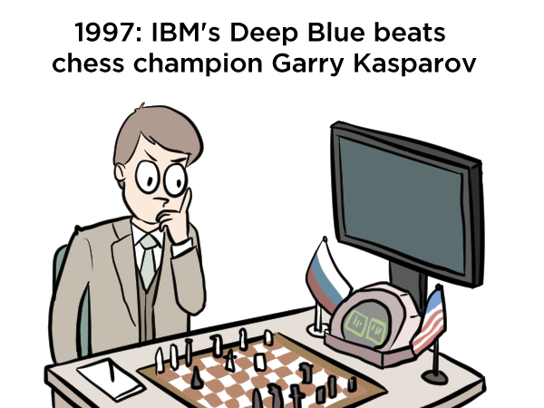

BigData FinTech: 자연어처리(Natural Language Processing)
Hyopil Shin (Dept. of Linguistics, Seoul National University)
hpshin@snu.ac.kr, http://knlp.snu.ac.kr, https://dag.snu.ac.kr
T.A: 장동준(qwer4107
@snu.ac.kr)


(http://www.theverge.com/2016/3/11/11208078/lee-se-dol-go-google-kasparov-jennings-ai)
ChatGPT
Course description
자연언어처리와 이해에서는 자연언어처리의 기본
개념과 방법론을 학습한다. 특히 텍스트 처리에 초점을 맞추어, raw text를 처리하는 다양한 방법들과
특히 최근에 많이 활용되고 있는 Transformer기반의 언어처리에 대해 학습하도록 한다.
Python, PyTorch를 활용하여 문서분류, 언어모델링, 거대언어모델(Large
Language Model) 등의 관점에서 금융-경제 데이터에 대해 집중적으로 실습하도록 한다.
Updates
Useful Sites
- Deep Learning Tutorials based on PyTorch
- Natural Language Processing with Transformers
- DaG
(David and Goliath Large Language Model)
- PyTorch
- Other Resources